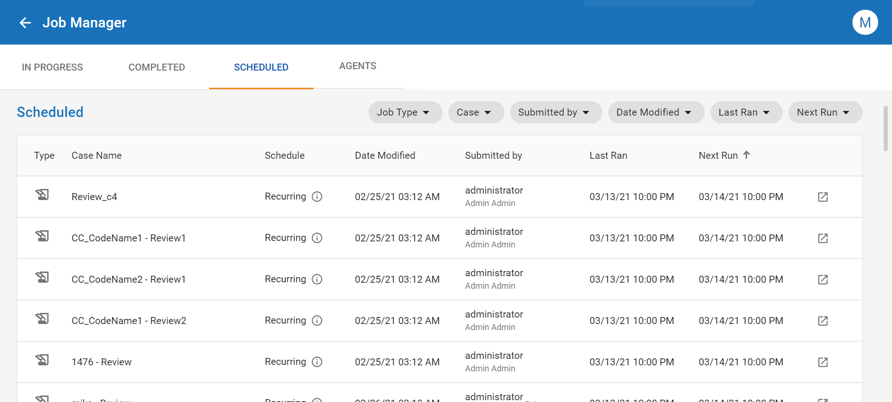

Overview: Job Manager
The Job Manager allows you to view, update, and manage jobs in the platform. The Job Manager provides an array of details about specific jobs that are processed, or scheduled for processing, in . Here you can view, filter, and sort jobs, access key information about job details, retry failed tasks, and download log files.

The Job Manager is divided into the following tabs:
-
In Progress
-
Completed
-
Scheduled
-
Agents
The In Progress tab displays the full list of active and pending jobs. When a job in is currently processing, paused, or queued up to be processed, it appears in this tab.
The Completed tab shows the full list of jobs that have finished processing in , with or without errors. In addition to tracking and reporting key details about completed jobs, this tab also provides you the ability to download PDF files (from Print to PDF jobs), as well as log files associated with each job.
The Scheduled tab displays jobs that are configured to run at some point in the future. These could be one-time jobs, or recurring jobs that are scheduled to run on a consistent basis. This tab also provides a button, , that allows you to jump quickly to the location in where each job is configured.
The Agents tab provides details about the status of each Job Manager agent, and can be useful for troubleshooting any issues that may arise when processing tasks in the Job Manager.
Open the Job Manager
To access the Job Manager:
- Launch the application.
- Sign in to your account using your username and password.
-
Click the icon in the top-right corner of your screen. The Job Manager opens.
|

|
Note: The Job Manager icon, , is accessible from all modules except the System Manager.
|
Assign Permissions for the Job Manager
allows administrators to set permissions that determine a user's access level within the Job Manager. To assign permissions for the Job Manager:
- Click the Settings icon
 in the top-right corner of the screen. The Settings icon is a global button that displays in every module of the platform.
in the top-right corner of the screen. The Settings icon is a global button that displays in every module of the platform.
-
The System Manager opens. In the left pane of the System Manager, click Groups.

-
Click on the name of the group you would like to edit. The group profile opens on the right side of the screen.
-
Click the Edit icon  . You are now able to modify the users, permissions, and cases for the selected group.
. You are now able to modify the users, permissions, and cases for the selected group.
- On the Permissions tab, expand the System section, then assign the Job Manager permissions you would like to provide the group. To learn more about the available permissions, see Permissions List.
-
Click Save.
Review the following topics to learn more about the procedures available to you when working in the Job Manager.
Work with In Progress Jobs
Work with Completed Jobs
Work with Scheduled Jobs
Monitor Job Manager Agents